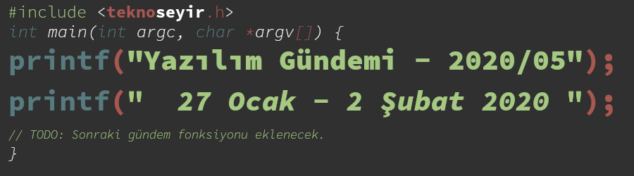
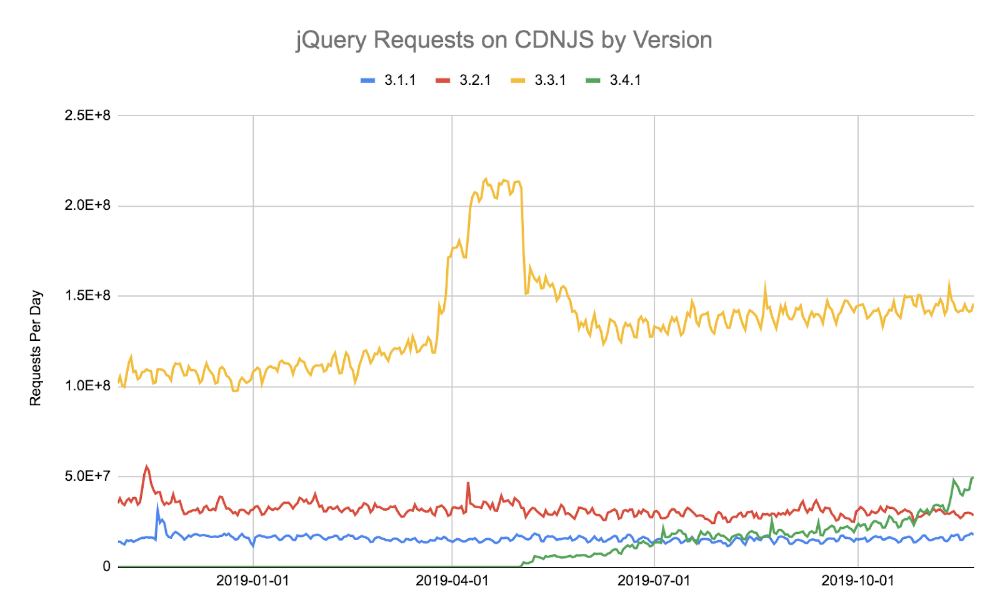
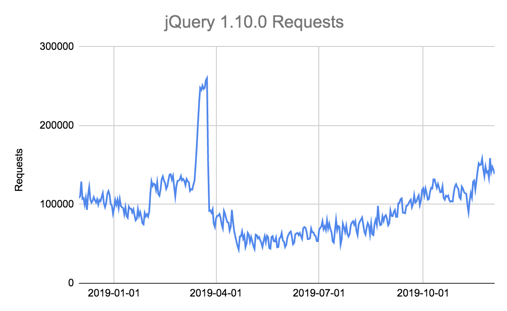
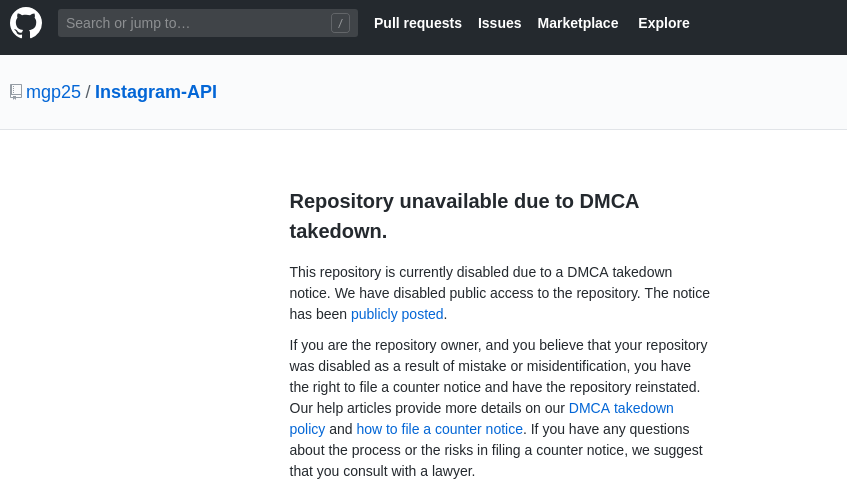
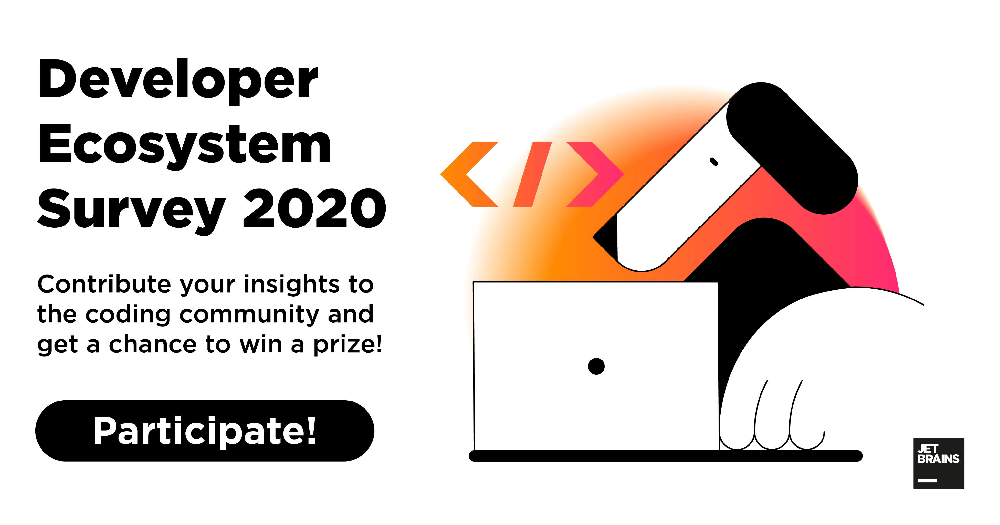
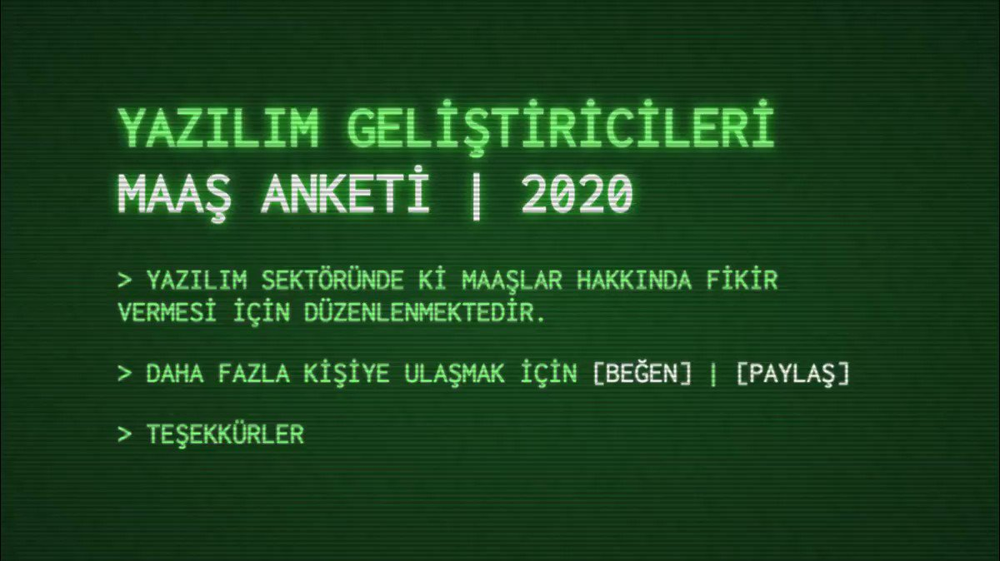

Yazılım Gündemi - 2020/05
27 Ocak - 2 Şubat 2020
İçindekiler
- 1. CWA, Teknoloji ve Oyun sektörü çalışanlarını örgütlemek istiyor
- 2. Cloudflare: "JavaScript kütüphaneleri projeye eklendikten sonra neredeyse hiç güncellenmiyor"
- 3. GitHub, illegal Instagram-API deposunu kilitledi
- 4. Qt 2020 yılına değişikliklerle girdi
- 5. Go 1.15 sürümü için planlar yapıldı
- 6. RStudio, Kamu Yararına Şirket oldu
- 7. Google App Maker hizmetini kapatıyor
- 8. Ekosistem ve topluluk anketleri
- 9. Yaklaşan Etkinlikler
- 10. Diğer Haberler
- 11. Lisans

< Önceki Gündem | 27 Ocak - 2 Şubat 2020 | Sonraki Gündem >
1 CWA, Teknoloji ve Oyun sektörü çalışanlarını örgütlemek istiyor
Amerika'daki büyük işçi sendikalarından biri olan The Communications Workers of America, şimdi de teknoloji ve oyun sektörü çalışanlarını bünyesine katmak ve onların da sorunlarını dile getirmek için paçaları sıvadı. Bu sendika hakkında pek bir bilgim yok ama bu haber özelinde konuşmak istediklerim olduğu için gündeme aldım bunu.
Örgütlü mücadele her zaman için ilgili sektördeki sorunların dile getirilebilmesi ve çözüme ulaştırılabilmesi açısından en iyi yöntemlerden birisidir. Konuyla ilgili atasözünün de dediği gibi: "Bir elin nesi var, iki elin sesi var". Ülkemizde maalesef pek fazla iyi örneklerine rastlayamasak da internet kullanıcıları olarak hepimizi etkileyen Adil Kullanım Noktası'nın (AKN) kaldırılması olayının arkasında örgütlü bir mücadele var: İnternette Kalite Hareketi. Bu minvalde yazılım geliştirme sektörü olarak da sorunlarımızı dile getirebileceğimiz, çözüm yolları için uğraşlar verebileceğimiz sendikalara ya da meslek örgütlerine ihtiyacımız var ve ilerlediğimiz gelecekte bu ihtiyacın daha da çok olacağını düşünüyorum. Ayrımcılıklar, fazla çalışma saatleri ve düşük ücretler, mobbing gibi sorunlar hemen her sektörde karşımıza çıksa da, etik olmayan uygulamalar (şirketin kullanıcıların verilerini izni olmadan kullanması vb.) ve hükumetlerle yapılan anlaşmalar gibi sektörümüze özel sorunlar da mevcut.
Türkiye'de benim bildiğim kadarıyla bizim alanımızı kapsayan meslek örgütü olarak Bilgisayar Mühendisleri Odası var. Faaliyetleri hakkında pek fazla bilgim olmasa da Delphi eğitimi protokolü için bildiriyle farkına vardığım bir oluşum oldu. Aslında önceden de ismini duymuştum fakat pek bakma fırsatım olmamıştı. Sayfalarını incelediğimde "En Az Ücret Tanımları" sayfası dikkatimi çekti. BMO, 2018 yılından beri her yıl "Mühendislik Asgari Ücreti" belirliyorlarmış. 2020 yılı için belirlenen Mühendislik Asgari Ücreti ise 5.000TL imiş. Sektöre ne kadar etkisi vardır bilinmez ama ben yine de bu tarz örgütlü faaliyetlerin olması gerektiğini düşünüyorum. Mesleki standartların belirlenmesi, haklarımızı aramak ve talep etmek için bu tarz örgütlere üye olmakta ve aktif görev almakta fayda var. Ben de şahsen işe girdiğimde BMO'ya üye olmayı düşünüyorum.
Bu konu hakkında siz ne düşünüyorsunuz? Sizce teknoloji sektörü çalışanları olarak nasıl örgütlenmeliyiz? Haklarımızı nasıl aramalıyız? Yorumlar bölümünde konuşalım.
2 Cloudflare: "JavaScript kütüphaneleri projeye eklendikten sonra neredeyse hiç güncellenmiyor"
Dünya çapında bir çok yerde veri merkezinin olması dolayısıyla CDN hizmetini de çok kolay verebilen Cloudflare firması, bu hafta alt hizmeti olan CDNJS ile ilgili bir analiz yayınladı. Bu analiz tam olarak bu haberin başlığındaki cümleyi içeriyor. Yani geliştiriciler olarak bir JavaScript kütüphanesini bir kere projeye ekliyoruz sonra güncellemelerle pek ilgilenmiyoruz.

Şekil 2: CDNJS sunucusuna bir günde gelen istek sayısına göre jQuery sürümleri grafiği
Grafikte sizin de kolayca görebileceğiniz üzere Mayıs 2019 ayında jQuery'nin yeni versiyonu olan 3.4.1 çıkmış olmasına rağmen diğer eski sürümlerin popülaritesini düşürememiş. En çok istek alan jQuery sürümü ise 3.3.1 olmuş.

Şekil 3: Hatta 2013 yılında yayınlanan jQuery 1.10.0 sürümü bile hata hatırı sayılır derecede istek alıyor
Elbette sisteminiz ilgili sürümlerde sorunsuz çalışıyorsa ve ihtiyaçlarınızı karşılıyorsa bir üst sürüme geçmek için efor sarf etmenize gerek yok ("çalışıyorsa dokunma") ama yine de güvenlik açıkları vb. nedenlerden dolayı projenize eklediğiniz her bağımlılığın sürümlerini takibe almakta fayda var.
3 GitHub, illegal Instagram-API deposunu kilitledi

Şekil 4: İlgili GitHub sayfasına girince sizi karşılayan sayfa
Instagram platformunun resmi olarak biz geliştiricilere sunduğu bir API sistemi olmadığı için çoğu kişi GitHub'da Mgp25 nickli kullanıcının yayınladığı resmi olmayan, PHP ile yazıldığını hatırladığım (yanlış hatırlıyor da olabilirim) Instagram-API isimli kütüphaneyi kullanıyordu. Fakat geçtiğimiz hafta (bu hafta gündem oldu) GitHub, Facebook'un isteği doğrultusunda bu GitHub deposunu kilitledi. Artık deponun sayfasına girmeye çalıştığınızda sizi yukarıdaki ekran görüntüsündeki gibi bir açıklama karşılıyor (bu durum deponun forkları için de geçerli). Açıkcası kullanım amacı kişiden kişiye değişiklik gösterse de çoğu kişi bu kütüphaneyi maalesef beğenme ve takip etme botları gibi amaçlar için kullandığından ve bazı telif hakkı sorunlarına yol açtığı için Facebook'u pek de haksız bulmuyorum.
Yapılan işlemlerle ilgili daha detaylı ve hukuki bilgiler için konu başlığına eklediğim bağlantıya bakabilirsiniz.
4 Qt 2020 yılına değişikliklerle girdi
Popüler platformlar-arası (cross-platform) uygulama geliştirme framework'lerinden olan Qt, bu hafta bloglarında yayınladıkları yazı ile fiyatlandırma ve lisanslamayla ilgili değişikliklere gittiklerini duyurdular. Maalesef değişiklikler pek bizim açımızdan olumlu yönde değil. Şöyle ki:
- Artık Qt binary'lerini indirmek için Qt hesabınız olması gerek.
- Uzun-dönem destekli (LTS - Long-term-supported) sürümler ve çevrimdışı kurumlar (offline installer) artık sadece ticari lisans sahiplerine sunulacak.
- Startuplar ve küçük ölçekli şirketler için Qt fiyatlandırması yıllık $499 oldu.
Yayınladıkları blog yazısında elbette tüm bu değişiklikler için mantıklı sebepler bulduklarını iddia ediyorlar. Örneğin ilk maddeyi şöyle savunmuşlar. Qt açık kaynak kullanıcılarının bile artık Qt binary indirmesi için "Qt Account" açması gerekiyor. Çünkü bu şekilde kendilerinin servislerini en iyi şekilde kullanabilecek ve katkı sağlayabilecekmişiz. Ayrıca bu sayede hata raporları, forumlar, kod incelemeleri vb birçok şeye de erişebilecekmişiz. Kısaca "kimler qt indiriyor ve kullanıyor elimizde tam listesi olsun istiyoruz" demiyorlar da lafı dolandırıyorlar işte. Qt açık kaynağı kodlarından derleyip kullanabilirsiniz tabii ki ama kolay olsun direkt binary indireyim derseniz "Qt Account" şart.
LTS sürümlerinin ve çevrimdışı kurulumların da sadece ticari lisans sahiplerine verilmesini de açık kaynak kullanıcıların yeni sürümlere daha iyi adapte olabilmesi için yapıyoruz demişler ama kendilerinin de açıkladığı gibi asıl mesele iş modellerini değiştirmek istemeler ve ticari lisansı firmalar için daha cazip kılmak istemeleri. Bunu biraz anlayışla karşılayabiliyorum çünkü ticari bir şirket oldukları için bu tarz kaygıları olması normal.
Kısaca haberi özetleyecek olursak Qt, açık kaynak kullanıcıları için biraz vanayı kısıyor. Açık kaynak kullanıcıları için kötü haber maalesef. Neyse, en azından tamamen ücretli hale gelmedi.
5 Go 1.15 sürümü için planlar yapıldı
Go programlama dili gün geçtikçe gelişmeye ve sürüm atlamaya devam ediyor. Bu hafta yayınladıkları blog yazısı ile Go takımı Şubat ayı içerisinde bir aksilik olmazsa, şu an beta sürecinde olan 1.14 sürümünü RC1 etiketi ile yayınlayacaklarını duyurmuşlar. Aynı zamanda bir sonraki sürüm olan 1.15 için de bazı kararların verilmesine başlamışlar. Bu yılın Ağustos ayında yayınlanması planlanan bu sürüm üzerinde çalışmak için GitHub üzerinden gelen şu üç öneriyi seçmişler:
- #32479: Diagnose string(int) conversion in
go vet. - #4483: Diagnose impossible interface-interface type assertions in
go vet. - #28591. Constant-evaluate index and slice expressions with constant strings and indices.
Görüldüğü üzere daha çok Go dilinin komut satırı aracı olan go vet üzerine
odaklanmışlar gibi gözüküyor. go vet aracı vermiş olduğunuz .go uzantılı
dosyayı inceliyor ve duruma göre size hata ve uyarı veriyor. Her ne kadar
planlar aşağı yukarı yapılmış gibi gözükse de Go takımı 1.14 sürümünün
yayınlanmasından biraz sonra geliştirmeye başlayacağı için 1.15 sürümü için
tartışmalara katılabilir ve yeni önerilerde bulunabilirsiniz. Henüz kapı tam
kapanmamış yani anlayacağız.
Üzerinde çalışılması planlanan özelliklerin ve sürecin detayları için konu başlığına eklediğim blog yazısına bakabilirsiniz.
6 RStudio, Kamu Yararına Şirket oldu
R programlama dili her ne kadar sektörel yazılımlarda pek tercih edilmese de veri bilimi ve özellikle de istatistik alanında çalışan akademisyenlerin gözdesi olmuş durumda. Çoğumuz R dilinin IDE'si sayılabilecek RStudio yazılımını aslında dilin bir parçası sanıyoruz. Hatta ben de bu haberle karşılaşana kadar öyle sanıyordum fakat RStudio aslında ayrıca geliştirilen bir araç, hatta şirketmiş. İşte bu şirket, bu hafta bloglarında yayınladıkları yazı ile birlikte bir "Public Benefit Corparation (PBC - Kamu Yararına Şirket)" haline gelmiş. Sanırım Türkiye'de olmayan bir şirket türü, biraz detaylarını araştırmaya çalıştım ama pek fazla bir şey anladığım söylenemez. Yine de bizim alanımızla ilgili bir yazılım üreten bir şirketin dönüşmesi olduğu için gündeme almak istedim.
Bundan sonraki ilerleyecekleri yolla ilgili detaylı bilgilere konu başlığına eklediğim bağlantıyı inceleyebilirsiniz.
7 Google App Maker hizmetini kapatıyor
Gün geçmiyor ki Google bir ürününü ya da hizmetini Google Mezarlığına göndermesin. Bu hafta da G Suite isimli işletmeler için çeşitli hazır çözümler içeren paketin içerisindeki App Maker hizmetini kapacağını duyurdu. İsminden anladığım kadarıyla işletmeler için kod yazmadan basit mobil uygulamalar oluşturmaya yarayan bir hizmetti. Geçtiğimiz haftalardaki bir yazılım gündemi yazısının (bkz: Yazılım Gündemi - 2020/03) "Diğer Haberler" bölümünde Google'ın, kod yazmadan uygulama geliştirme aracı olan AppSheet'i satın aldığını yazmıştım. Dolayısıyla böyle bir gelişme bizim için pek sürpriz olmadı.
Bu hizmeti hemen kapatmıyorlar tabii ki ama ufaktan fişini çekmeye hazırlanıyorlar. Süreç bu şekilde ilerleyecekmiş:
- 27 Ocak 2020: Var olan uygulamalar çalışmaya devam edecek fakat App Maker hizmetinin geliştirilmesine devam edilmeyecek. Kritik hatalar hâlâ mevcut.
- 15 Nisan 2020: Geliştiriciler bu tarihten itibaren yeni App Maker uygulaması oluşturamayacaklar.
- 19 Ocak 2021: Var olan uygulamalar çalışmayacak. App Maker verileriniz Cloud SQL üzerinde değişmeden duracak ve Google Cloud Platform hesabınızının poliçelerini takip etmeye devam edecek. Son cümleyi ben de tam anlamadım fakat sanırım GCP kapsamında bazı ücretlendirmeler fatura edilebilir demek istiyorlar.
Yani anlayacağız Google yeni satın aldığı bir şirketin çözümünü kendi sistemine entegre ediyor ve kendi çözümünü de kullanımdan kaldırıyor. Dağdan gelen bağdakini kovdu yani. Konu başlığına eklediğim bağlantıda da zaten Google, App Maker alternatifi olarak AppSheet'i göstermiş ve oraya geçilmesini tavsiye etmiş. Eğer sistemi kullanıyorsanız konu başlığındaki bağlantıyı mutlaka okuyun ve aksiyon almaya başlayın.
8 Ekosistem ve topluluk anketleri
8.1 JetBrains Developer Ecosystem Survey 2020

JetBrains'in her yıl düzenli olarak yaptığı geliştirici ekosistemi anketi bu yılda katılıma açıldı. Diğer anketlerden farklı olaran JetBrains'in ekonomik gücü olduğu için katılımcılardan rastgele kişilere ödüller de (MacBook Pro, $300'lık Amazon hediye kartı ve JetBrains Sürpriz Hediye Paketi) veriyor. Ben nasıl olsa çıkmaz diyerek MacBook Pro'yu seçtim. Anket biraz uzun 20-25 dakika sürebiliyor ama isterseniz kaydedip sonra da kaldığınız yerden doldurmaya devam edebiliyorsunuz. Geçtiğimiz senenin anket sonuçları için: The State of Developer Ecosystem 2019.
8.2 Yazılım Geliştiricileri Maaş Anketi 2020

Twitter'daki oncekiyazilimci nickli parodi hesabının 2 yıldır düzenli olarak yaptığı bir anket çalışması. Ankete katılım 31 Mart 2020 tarihine kadar devam edecekmiş. Önceki yılların anket sonuçları için bu sayfaları ziyaret edebilirsiniz:
9 Yaklaşan Etkinlikler
| Etkinlik İsmi | Yeri | Tarihi |
|---|---|---|
| Spring Boot uygulamalarında derin Elasticsearch kullanımı | İstanbul | 3 Şubat 19:00 |
| Cloud Native Uygulamalarda GitLab + CI ile GitOps Pratikleri | İstanbul | 4 Şubat 19:00 |
| Python Saati 101 - The Zen of Software Developer | İstanbul | 4 Şubat 19:00 |
| Google Cloud Days 3 - Production-Scale ML Platform on GCP | İstanbul | 5 Şubat 18:30 |
| Kanser Tedavisinde Derin Öğrenme Yöntemlerinin Kullanımı | İstanbul | 6 Şubat 18:30 |
| Watson ile Kendi Chatbot'unuzu Nasıl Oluşturursunuz? | İstanbul | 6 Şubat 19:00 |
| Test Automation Project With Spring Framework | İstanbul | 11 Şubat 19:00 |
| Mobil Harita Üretimi, HD-map ve Mekansal Zeka | İstanbul | 13 Şubat 18:30 |
| RxJava'yı legacy koda uygulamak | İstanbul | 13 Şubat 19:00 |
| Yapay Zeka Okuryazarlığı | İstanbul | 14 Şubat 18:30 |
| Makine Öğrenmesine Giriş - 101 | İstanbul | 15 Şubat 08:30 |
| Microservices | İstanbul | 15 Şubat 13:00 |
| Python ile Programlamaya Giriş | Ankara | 15 Şubat 11:00 |
10 Diğer Haberler
- OpenAI ve PyTorch güçlerini birleştiriyor.
- Google, TinyGo projesine sponsor oldu.
- GitLab'ın Mercurial destekli fork'u açık kaynak ve özgür yazılım olarak duyuruldu: Heptapod.
- Rust programlama dilinin 1.41.0 sürümü duyuruldu.
- Rust takımı IDE dostu derleyicisini duyurdu: Rust Analyzer.
- GNU C kütüphanesinin 2.31 sürümü yayınlandı.
- Elixir programlama dilinin 1.10 sürümü yayınlandı.
- JetBrains, Ktor framework sisteminin 1.3 sürümünü yayınladı.
- Google, Dagger kütüphanesinin 2.26 sürümünü yayınladı.
- EdgeDB veritabanının 1.0 Alpha 2 sürümü duyuruldu.
- Dağıtık veritabanı sistemi etcd, 3.4.3 sürümünü yayınladı.
- Unity oyun motorunun 2019.3 sürümü duyuruldu.
- Godot oyun motorunun 3.2 sürümü duyuruldu.
- Raspberry Pi'ye Vulkan desteği geliyor.
- Derin öğrenme kütüphanesi Thinc, v8.0.0a0 sürümünü yayınladı.
- Görsel bir şekilde Python kodu debug etmeye yarayan vardbg aracının v0.11.6 sürümü yayınlandı.
- Python veri analizi kütüphanesi Pandas, 1.0.0 sürümünü yayınladı. GitHub Deposu
- OpenAPIGenerator v4.2.3 çıktı.
11 Lisans

Yazılım Gündemi - 2020/05 yazısı Eren Hatırnaz tarafından Creative Commons Atıf-GayriTicari-AynıLisanslaPaylaş 4.0 Uluslararası Lisansı (CC BY-NC-SA 4.0) ile lisanslanmıştır.